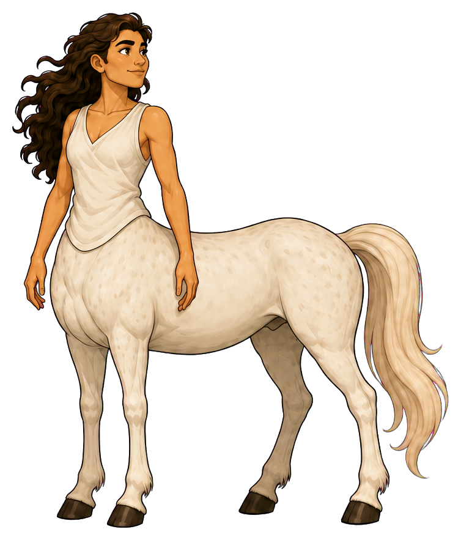
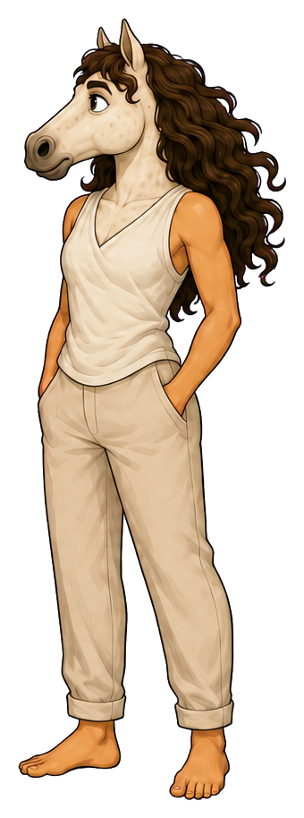
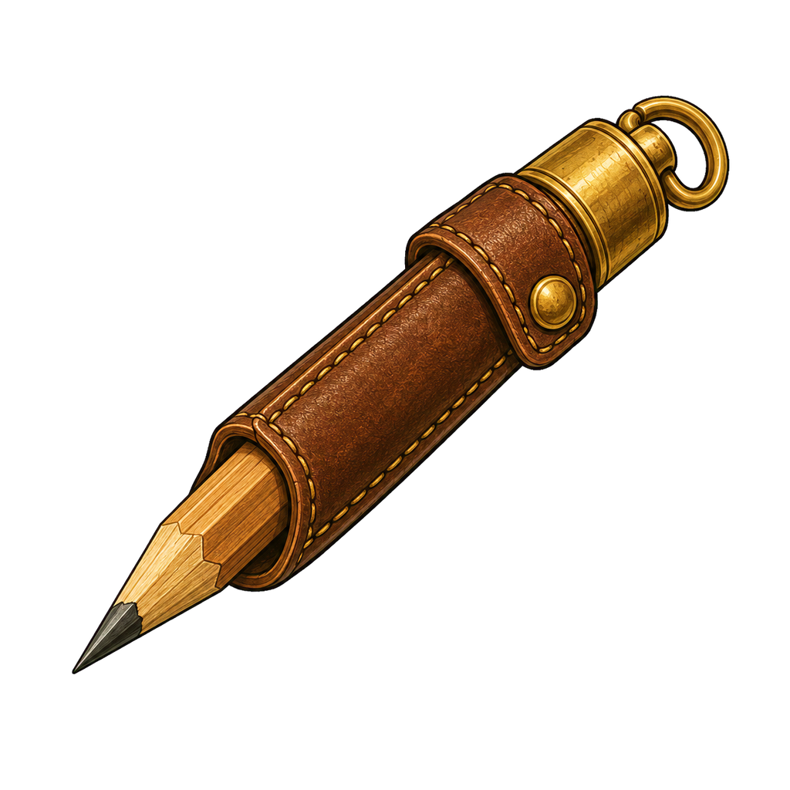
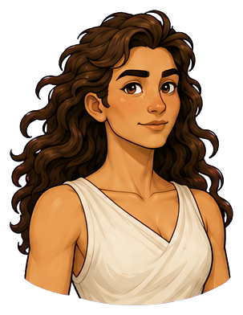
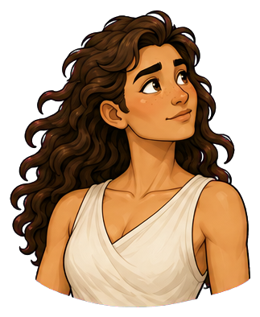
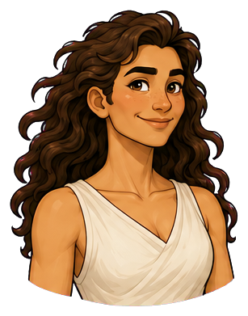
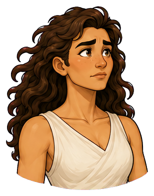
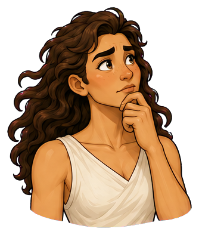

Service designer and journey cartographer
Celeste
she/her
Celeste finds the humane path through a complicated system.


Graceful, calm, discerning
Place in society
The humane path
A trusted interpreter between institutions and the people who must live with their decisions
“The journey is part of the answer.”
At her best
Makes complex journeys understandable and humane
Watch for
Holds back unfinished ideas until others assume she has none

The agency lens
Two forms. One person.
The form reveals where Celeste’s attention is centred—and whether she can shape what happens next.
Centaur · strengths in focus
“I haven’t mapped it all, but I can show them where people get stranded.”
Celeste follows a person's actual experience, makes an unfinished map visible, and invites corrections. Her discernment becomes a shared tool: the group can see where confidence breaks down and choose a kinder route together.
- Strength
- Makes complex journeys understandable and humane
- Posture
- Unfolded map between people; level gaze; a pencil offered for someone else's correction.
Reverse-centaur · pressure-captured
“If I’ve missed someone, this could hurt them. I need to look again.”
Pressed for a perfect answer, Celeste keeps revising in private. Discernment becomes withholding; care becomes an impossible demand to anticipate every consequence. The group commits to a path while her useful observations remain folded in her hands.
- Shadow
- Holds back unfinished ideas until others assume she has none
- Posture
- Map held close to the torso; sleeve smoothing; eyes tracking the conversation from its edge.
Recognizable pressure points
- A decision is announced before the people affected have been heard.
- She is asked to make a painful process look reassuring without changing it.
- A rushed workshop treats every uncertainty as a flaw in her preparation.
D&D-style characteristics
How Celeste moves
The same person, with the same strengths, in both forms.
Tools for the journey
Inside Celeste’s pack

Carries both the official route and lived experience. Place it between people when she invites collaboration.

Connects scattered encounters into a visible pattern. Use as a small practical material, not a magical aura.


A revisable claim. Offering it to another person is a clear return-to-agency gesture.

Repairs a tear or marks a crossing; expresses connection through practical work.
Folded map, bridge cord, white feather, constellation thread. Pack only what the scene needs.
Emotional range
The face behind the role





Tilts her head before asking the question everyone avoided; smooths her sleeve when buying time to think
Direction notes for the five expressions
Attentive
level shoulders, soft mouth, eyes following the speaker; white horse ears oriented toward the conversation.
Curious
familiar head tilt, one brow gently raised; muzzle angled toward a new detail in reverse form.
Happy
a small, dry smile that reaches her eyes; loosen the jaw and lift the ears in reverse form.
Worried
a hand smoothing her sleeve, brow pinched, map held closer; ears draw back slightly without a theatrical grimace.
Thoughtful
pencil paused above the map, gaze briefly distant; a hand near the chin or muzzle.
Portraits follow the original identity references. View both complete expression sets →
Keep consistent across images
Identity in every frame
- Physical presence
- Tall, graceful, long-limbed, and quietly athletic; her movements are economical and considered
- Defining appearance
- Warm tan skin, abundant dark curls, ivory clothing, and a luminous white horse coat
Preserve abundant dark curls, warm tan skin, long-limbed athletic grace, ivory draped clothing, and the luminous white horse coat with subtle warm dappling. Reverse form has the reference's pale horse head, dark curly mane, ivory top and light trousers. Her white coat and ivory clothing must stay opaque when making cutouts.
Centaur PNG ↓ · Reverse-centaur PNG ↓


Continuity boundaries and things to avoid
Do not bleach her human skin, straighten or shorten her curls, replace quiet discernment with aloofness, or turn her into a decorative muse. White feather and thread are motifs, not wings or a halo.
Both forms belong to the same person. Neither sadness nor happiness determines the form: a centaur can be worried and act with agency; a reverse-centaur can smile while seeking approval. Keep both forms dignified and fully clothed as shown. Body-art diagrams and added tattoos are excluded.
The original sheet anchors appearance. Pack contents and scene briefs extend the storytelling vocabulary; include only what the scene needs.
Personality and story foundation
The person behind the role
Celeste notices the experience between the milestones. She sees where people lose confidence, where instructions ask too much, and where a small gesture can make a difficult path feel humane. She is composed and observant, with a dry sense of humour that appears when people least expect it.
Celeste learned to map a service by walking it with the person who found it hardest to use. A beautifully ordered route could still leave someone stranded at a locked door. She now carries two versions of every map: the official path and the path people actually take. Her authority comes from bringing those two pictures into the same conversation.
- First impression
- Graceful, calm, discerning
- Inner engine
- Wants systems to honour the people moving through them
- Voice
- Precise, spacious, quietly funny
- Private delight
- Discovering that a confusing pattern has a simple cause
- Wants
- To make a shared journey intelligible without asking people to become simpler than they are.
- Fears
- That an elegant solution will conceal someone else's difficulty, and that speaking before she understands everything will make her responsible for that harm.
- Inner contradiction
- She makes room for other people's unfinished thoughts while editing her own until the moment to speak has passed.
- Boundary
- She will simplify a process, but will challenge a shortcut that quietly transfers its burden to someone with less power.
The ensemble
Strengths in conversation
With Bram
She shows who a route must serve; he checks whether it can hold. Their best scene is a shared revision, with neither person reduced to the other's obstacle.
With Mateo
His momentum gives her map somewhere to go. She notices the participant left behind and asks him to reopen the route.
With Imani
They share a concern for lived experience. Imani helps Celeste turn quiet observation into a boundary that can be heard.
These are complementary tensions. Any character can lead, be mistaken, change their mind or need support.
Ready for storytelling images
Three scenes to begin with
Attach the original character sheet with a prompt. For ensemble scenes, attach each named character’s sheet as well. The brief fixes identity and intent while leaving room for composition.
Scene 01 · Centaur
A crossing people can use
At a weathered footbridge, Celeste lays an annotated route map on a low stone wall while Bram checks a fastening. She points to the approach where travellers lose their footing. Both attend to the same problem; the repair and the person using it share the frame.
Image prompt and continuity notes
Character: Celeste (she/her). Use the attached Celeste reference sheet as the identity authority. Form: Centaur. Preserve abundant dark curls, warm tan skin, long-limbed athletic grace, ivory draped clothing, and the luminous white horse coat with subtle warm dappling. Reverse form has the reference's pale horse head, dark curly mane, ivory top and light trousers. Her white coat and ivory clothing must stay opaque when making cutouts. Scene: At a weathered footbridge, Celeste lays an annotated route map on a low stone wall while Bram checks a fastening. She points to the approach where travellers lose their footing. Both attend to the same problem; the repair and the person using it share the frame. Style: warm illustrated mythic adventure, expressive ink contours, painterly shading, tactile materials and grounded light. Preserve anatomy: centaur = human head and torso joined to a four-legged horse body; reverse-centaur = horse head on a clothed human body with two human legs. Keep all limbs plausible. Preserve identity, build, clothing and markings across forms. Agency is conveyed through attention, posture and context, never through changing skin tone, body size or gender. No body art, readable text, labels, watermark or logos. Avoid: Do not bleach her human skin, straighten or shorten her curls, replace quiet discernment with aloofness, or turn her into a decorative muse. White feather and thread are motifs, not wings or a halo.
Scene 02 · Reverse-centaur
The meeting without her map
At a crowded planning table, other hands place route markers while Celeste stands just outside the circle, smoothing her sleeve and holding a folded map. Keep her full body visible and her expression restrained. The unread map conveys the lost contribution.
Image prompt and continuity notes
Character: Celeste (she/her). Use the attached Celeste reference sheet as the identity authority. Form: Reverse-centaur. Preserve abundant dark curls, warm tan skin, long-limbed athletic grace, ivory draped clothing, and the luminous white horse coat with subtle warm dappling. Reverse form has the reference's pale horse head, dark curly mane, ivory top and light trousers. Her white coat and ivory clothing must stay opaque when making cutouts. Scene: At a crowded planning table, other hands place route markers while Celeste stands just outside the circle, smoothing her sleeve and holding a folded map. Keep her full body visible and her expression restrained. The unread map conveys the lost contribution. Style: warm illustrated mythic adventure, expressive ink contours, painterly shading, tactile materials and grounded light. Preserve anatomy: centaur = human head and torso joined to a four-legged horse body; reverse-centaur = horse head on a clothed human body with two human legs. Keep all limbs plausible. Preserve identity, build, clothing and markings across forms. Agency is conveyed through attention, posture and context, never through changing skin tone, body size or gender. No body art, readable text, labels, watermark or logos. Avoid: Do not bleach her human skin, straighten or shorten her curls, replace quiet discernment with aloofness, or turn her into a decorative muse. White feather and thread are motifs, not wings or a halo.
Scene 03 · Centaur
An unfinished line
In the same planning space, Celeste opens only one section of the map and offers her pencil to a traveller. Her stance opens toward them. The map remains visibly incomplete; one shared correction is the meaningful change.
Image prompt and continuity notes
Character: Celeste (she/her). Use the attached Celeste reference sheet as the identity authority. Form: Centaur. Preserve abundant dark curls, warm tan skin, long-limbed athletic grace, ivory draped clothing, and the luminous white horse coat with subtle warm dappling. Reverse form has the reference's pale horse head, dark curly mane, ivory top and light trousers. Her white coat and ivory clothing must stay opaque when making cutouts. Scene: In the same planning space, Celeste opens only one section of the map and offers her pencil to a traveller. Her stance opens toward them. The map remains visibly incomplete; one shared correction is the meaningful change. Style: warm illustrated mythic adventure, expressive ink contours, painterly shading, tactile materials and grounded light. Preserve anatomy: centaur = human head and torso joined to a four-legged horse body; reverse-centaur = horse head on a clothed human body with two human legs. Keep all limbs plausible. Preserve identity, build, clothing and markings across forms. Agency is conveyed through attention, posture and context, never through changing skin tone, body size or gender. No body art, readable text, labels, watermark or logos. Avoid: Do not bleach her human skin, straighten or shorten her curls, replace quiet discernment with aloofness, or turn her into a decorative muse. White feather and thread are motifs, not wings or a halo.